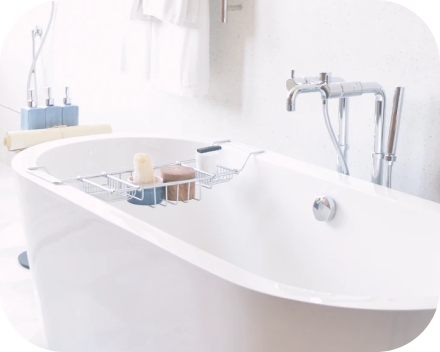

Washtafel
Washtafel adalah perangkat sanitasi yang umum ditemukan di kamar mandi dan dapur. Fungsinya adalah sebagai tempat untuk mencuci tangan, wajah, atau benda kecil. Terbuat dari berbagai bahan seperti porselen, keramik, stainless steel, atau kaca, washtafel dilengkapi dengan keran air dan saluran pembuangan. Desain washtafel bervariasi dari yang sederhana hingga yang mewah, sering kali menyesuaikan dengan estetika ruangan.
